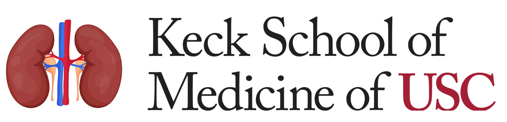

Join us at the Vito M Campese MD/UKRO Kidney Research Center of USC for our new Journal Club on Kidney Disease! This interactive forum brings together researchers, clinicians, and students for in-depth discussions on the latest advancements in kidney research. Each quarter, we will explore a new theme through a curated selection of high-impact articles, fostering a collaborative environment for knowledge exchange and critical analysis. Open to all interested in the forefront of kidney disease research and innovations. Don’t miss this opportunity to engage with colleagues and deepen your understanding of the complex science behind kidney health and disease.
We meet on the first Tuesday of the month from 4-5pm PST.
Organizers: Jonathan Nelson (jnelson4@usc.edu) and Alicia McDonough (mcdonoug@usc.edu)
Trouble accessing a manuscript? Email Alicia: mcdonoug@usc.edu
Click here to join the Southern California Kidney Journal Club and receive emails with the zoom link to attend.
| Date | Manuscript | Paper | Presenter | Material |
|---|---|---|---|---|
| April 1st | Synchronization in renal microcirculation unveiled with high-resolution blood flow imaging | eLife 2022 | Ivy Xiong | |
| May 6th | Visualization of intracellular ATP dynamics in different nephron segments under pathophysiological conditions using the kidney slice culture system | Kidney International 2024 | Vadym Buncha | |
| June 3rd | Sparsentan improves glomerular hemodynamics, cell functions, and tissue repair in a mouse model of FSGS | JCI Insight 2024 | Georgina Gyarmati |
| Date | Manuscript | Paper | Presenter | Material |
|---|---|---|---|---|
| January 7th | Spatiotemporal Landscape of Kidney Tubular Responses to Glomerular Proteinuria | JASN 2024 | Jonathan Nelson | Material |
| February 4th | Dissociation of Hypertension and Renal Damage After Cessation of High-Salt Diet in Dahl Rats | Hypertension 2024 | Alicia McDonough | Material |
| March 4th | SOX9 switch links regeneration to fibrosis at the single-cell level in mammalian kidneys | Science 2024 | Jonathan Nelson | Material |